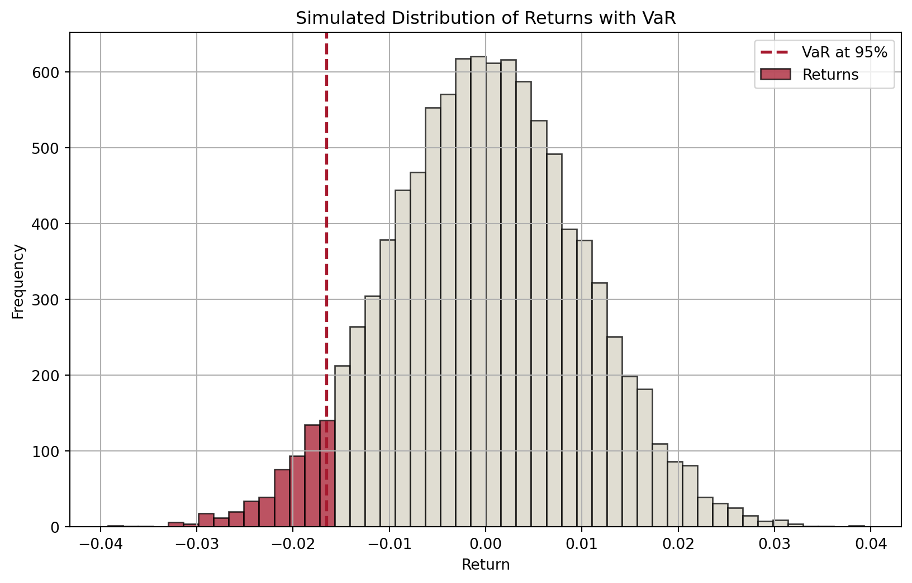
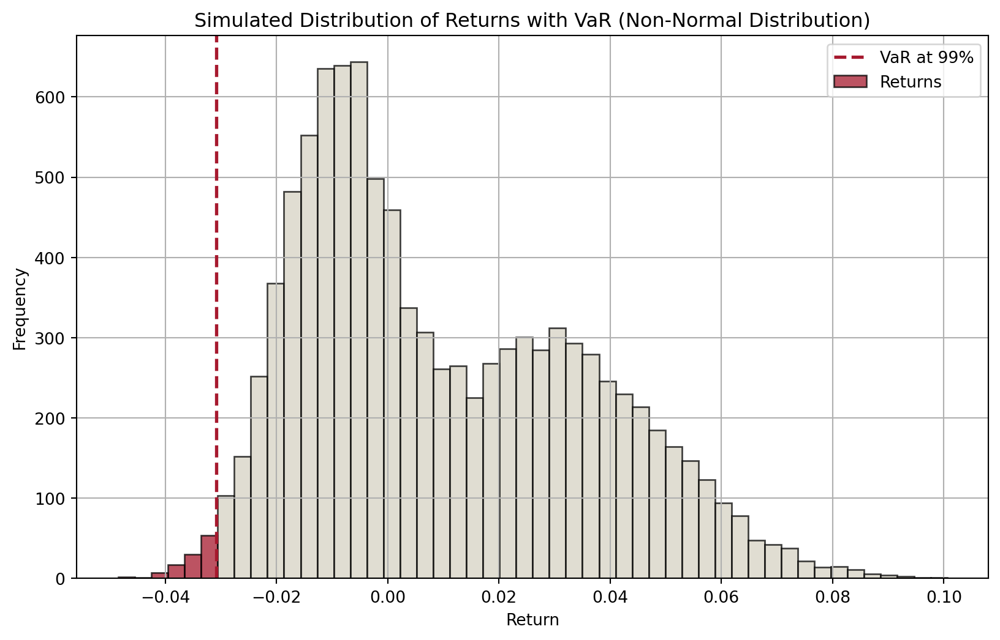
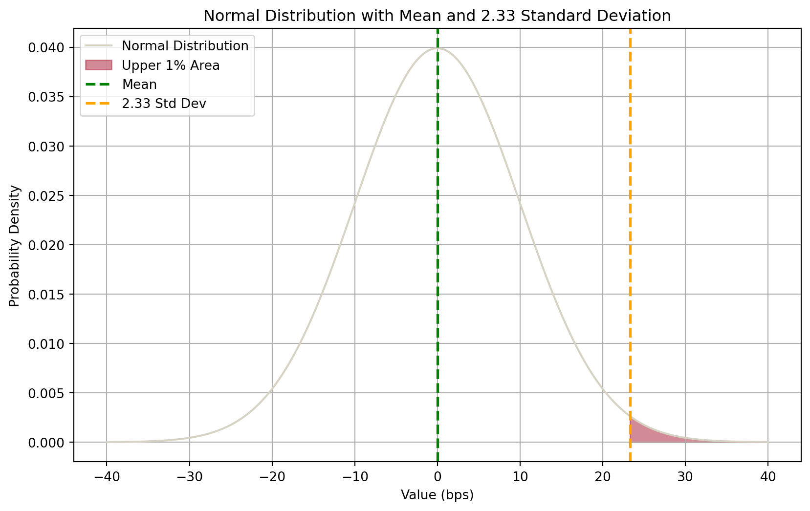
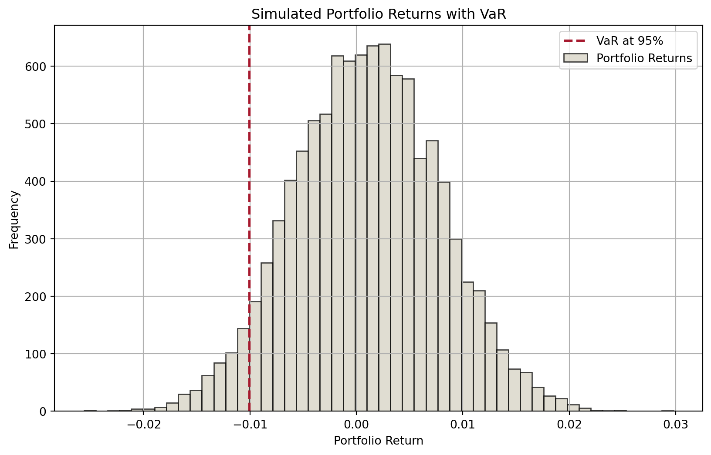
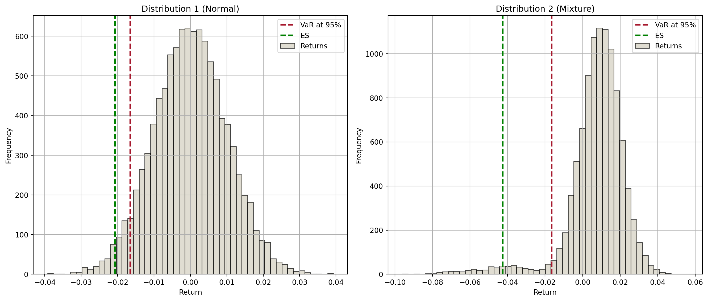
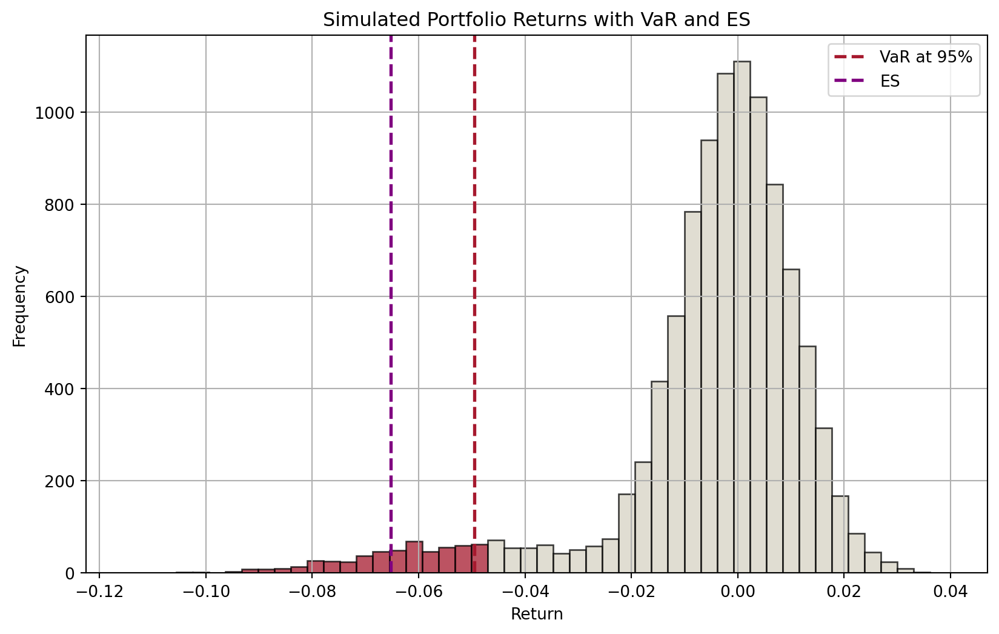

In last week, we discussed interest rate risk: changes in interest rates could affect a FI’s income and net worth.
Interest rate changes affect mostly the banking book.
The trading book is exposed to market risk.
Assets
Liabilities
Banking book
Cash
Deposits
Loans
Other liabilities
Other assets
Capital
Trading book
Bonds (long)
Bonds (short)
Commodities (long)
Commodities (short)
FX (long)
FX (short)
Equities (long)
Equities (short)
Mortgage-backed securities (long)
Derivatives1 (long)
Derivatives (short)
Market Risk
Market risk is uncertainty of an FI’s earnings on its trading portfolio caused by changes, particularly extreme changes, in market conditions such as the price of an asset, interest rates, market volatility, and market liquidity.
Introduction (cont’d)
Intuitively, trading book includes assets, liabilities and derivatives that are actively traded in some financial markets and hence exposed to uncertainties of these markets.
Market risk exposure
FIs are concerned about the potential impact of changing market conditions on their trading book and ultimately their net worth and solvency.
A natural question becomes:
How to quantify such impact? What is the potential change in value of trading portfolio for a given period?
More specifically,
What is the worst loss we can expect not to exceed with a given confidence level over a specific time horizon?
What is the expected loss when losses exceed a certain level over a specific time horizon?
Answering these questions leads to the development of two important concepts for measuring market risk exposure:
Value at Risk (VaR).
Expected Shortfall (ES).
We start with the concept of Value at Risk (VaR), then discuss its limitations and the use of Expected Shortfall (ES).
Value at Risk (VaR)
Concept of VaR
Suppose we know the distribution of an asset’s returns over a specific period (in the future), then for a given confidence level \(c\in[0,1]\) (e.g., \(c=0.95\)), we can partition the distribution into two parts: one (in red) that represents a proportion of \((1-c)\) of the distribution and the other (in blue) accounting the remaining \(c\) proportion.
Code
import numpy as npimport matplotlib.pyplot as plt# Set seed for reproducibilitynp.random.seed(42)# Parametersmu =0# Mean of returnssigma =0.01# Standard deviation of returnsn =10000# Number of simulationsconfidence_level =0.95# Simulate returnsreturns = np.random.normal(mu, sigma, n)# Calculate VaRVaR = np.percentile(returns, (1- confidence_level) *100)# Plot histogram with different colors for bars below and above VaRplt.figure(figsize=(10, 6))# Histogram datan, bins, patches = plt.hist(returns, bins=50, alpha=0.75, edgecolor="black")# Change color of barsfor i inrange(len(patches)):if bins[i] < VaR: patches[i].set_facecolor("#A6192E")else: patches[i].set_facecolor("#D6D2C4")# Add VaR lineplt.axvline(VaR, color="#A6192E", linestyle="dashed", linewidth=2)plt.title("Simulated Distribution of Returns with VaR")plt.xlabel("Return")plt.ylabel("Frequency")plt.legend(["VaR at 95%", "Returns"])plt.grid(True)plt.show()

Figure 1: Distribution of expected returns and VaR
Therefore, the cutoff value of returns that separates the two parts defines:
a minimum return that we are confident 95% of the time, or
a maximum loss that we are confident 95% of the time.
Another example of VaR
This VaR concept does not depend on the shape of return distribution.
For example, below we have an interestingly shaped return distribution. Given a confidence level of 99%, we can find the 99% VaR.
Code
# Simulate returns with a non-normal distribution (e.g., bimodal distribution)np.random.seed(42)# Parameters for bimodal distributionn =10000mu1, sigma1, weight1 =-0.01, 0.01, 0.5mu2, sigma2, weight2 =0.03, 0.02, 0.5# Generate bimodal returnsreturns1 = np.random.normal(mu1, sigma1, int(n * weight1))returns2 = np.random.normal(mu2, sigma2, int(n * weight2))returns = np.concatenate([returns1, returns2])# Calculate VaRconfidence_level =0.99VaR = np.percentile(returns, (1- confidence_level) *100)# Plot histogram with different colors for bars below and above VaRplt.figure(figsize=(10, 6))# Histogram datan, bins, patches = plt.hist(returns, bins=50, alpha=0.75, edgecolor="black")# Change color of barsfor i inrange(len(patches)):if bins[i] < VaR: patches[i].set_facecolor("#A6192E")else: patches[i].set_facecolor("#D6D2C4")# Add VaR lineplt.axvline(VaR, color="#A6192E", linestyle="dashed", linewidth=2)plt.title("Simulated Distribution of Returns with VaR (Non-Normal Distribution)")plt.xlabel("Return")plt.ylabel("Frequency")plt.legend(["VaR at 99%", "Returns"])plt.grid(True)plt.show()

Figure 2: Distribution of expected returns and VaR (another example)
From the plot, we can say that 99% of the time, the asset’s return will be in the blue region, which means that it will not fall below the 99% VaR (recall that VaR is a cutoff value).
Models for computing VaR
Over the years, many models have been developed to compute VaR.
This is because we do not have the return distribution of trading portfolio over a specific period in the future.
If we do, then VaR is unambiguous.
Therefore, different assumptions lead to different models and approaches. We are interested in three in this course:
RiskMetrics (variance-covariance approach)
Historic or back simulation
Monte Carlo simulation
VaR: RiskMetrics
“At close of business each day tell me what the market risks are across all businesses and locations”
Sir Dennis Weatherstone, 1989, former chairman of J.P. Morgan & Co., now JPMorgan Chase.
Managers at JPM needs to respond with “I am X% sure that the FI will not lose more than $VAR in the next T days.”
Basically, the FI manager wants a single dollar number that tells him or her the FI’s market risk exposure over the next days—especially if those days turn out to be extremely “bad” days.
A very difficult task given that in 1994, JPMorgan had 14 active trading locations with 120 independent units trading fixed-income securities, foreign exchange, commodities, derivatives, emerging-market securities, and proprietary assets.
JPMorgan developed RiskMetrics model.
VaR: RiskMetrics (cont’d)
In a nutshell, we are concerned about the market risk exposure on a daily basis. Market risk exposure over longer periods, under some assumptions, can be viewed as a simple transformation from the daily exposure.
The market risk is measured by the daily earnings at risk (DEAR): \[
\text{DEAR} = \left(\text{dollar market value of the position}\right) \times \left(\text{price sensitivity of the position}\right) \times \left(\text{potential adverse move}\right)
\]
Since price sensitivity multiplied by adverse move measures the degree of price volatility of an asset, we can write this equation as: \[
\text{DEAR} = \left(\text{dollar market value of the position}\right) \times \left(\text{price volatility}\right)
\]
Dear DEAR and VaR
DEAR is basically 1-day dollar VaR in the context of RiskMetrics model.
If we assume that shocks are independent, daily volatility is approximately constant, and that the FI holds this asset for \(N\) number of days, then the \(N\)-day VaR is related to DEAR by: \[
N\text{-day VaR} = \left(\text{DEAR}\right) \times \sqrt{N}
\]
VaR: RiskMetrics (cont’d)
Next, we will apply RiskMetrics model on:
fixed-income securities
foreign exchange (FX)
equities
Afterwards, we will study how to compute portfolio VaR.
Note
Recall that we need a single number across all asset classes for the aggregate market risk exposure. Aggregation is necessary.
VaR: RiskMetrics for fixed-income securities
Suppose an FI has a $1 million market value position in zero-coupon bonds of 7 years to maturity with a face value of $1,631,483. Today’s yield on these bonds is 7.243%.
How to estimates its DEAR? Some additional assumptions are required.
Checking the formula: \[
\text{DEAR} = \left(\text{dollar market value of the position}\right) \times \left(\text{price sensitivity of the position}\right) \times \left(\text{potential adverse move}\right)
\]
Of these three components:
dollar market value of the position is $1 million.
price sensitivity of bonds (w.r.t. yield) is measured by (modified) duration (recall last week’s material). \[
MD = \frac{D}{1+R} = \frac{7}{1+0.07243} = 6.527
\]
potential adverse move (in yield) depends on the assumption of yield distribution and our chosen confidence level.
VaR: RiskMetrics for fixed-income securities (cont’d)
In terms of the “potential adverse move in yield”, let’s assume we are concerned about bad yield changes such that there is only a 1% chance that the yield changes will exceed this amount.1
Note that bond prices decrease with yields. So, we want to know:
the “maximum upward change in the 7-year rates” (over a day) with a 1% possibility.
With RiskMetrics, we assume that changes in (7-year) yields follow a Normal distribution. We further assume that2
the mean \(\mu\) of daily changes in yield is 0bps.
the standard deviation \(\sigma\) of daily changes in yield is 10bps.
VaR: RiskMetrics for fixed-income securities (cont’d)
Therefore, we can get distribution of daily changes in (7-year) yields as below.
Code
import numpy as npimport matplotlib.pyplot as pltfrom scipy.stats import norm# Parameters for normal distributionmu =0# meansigma =10# standard deviation (10 bps)# Generate datax = np.linspace(mu -4* sigma, mu +4* sigma, 1000)y = norm.pdf(x, mu, sigma)# Calculate the value at 2.33 standard deviations from the meanthreshold = mu +2.33* sigma# Plot normal distributionplt.figure(figsize=(10, 6))plt.plot(x, y, label="Normal Distribution", color="#D6D2C4")# Fill the upper 1% areax_fill = np.linspace(threshold, mu +4* sigma, 100)y_fill = norm.pdf(x_fill, mu, sigma)plt.fill_between(x_fill, y_fill, color="#A6192E", alpha=0.5, label="Upper 1% Area")# Mark mean and thresholdplt.axvline(mu, color="green", linestyle="dashed", linewidth=2, label="Mean")plt.axvline( threshold, color="orange", linestyle="dashed", linewidth=2, label="2.33 Std Dev")plt.title("Normal Distribution with Mean and 2.33 Standard Deviation")plt.xlabel("Value (bps)")plt.ylabel("Probability Density")plt.legend()plt.grid(True)plt.show()

Figure 3: Normal distribution of changes in 7-year yields
The good mathematical property of normal distribution allows us to know that the upper 1% area is separated from the lower 99% by the value \(\mu+2.33\sigma\).
Since \(\mu=0\) and \(\sigma=10\text{bps}\), the cutoff value is \(2.33\sigma=23.3\text{bps}\).
Note
It means that, we are 99% confident that the maximum daily upward (adverse) change in (7-year) yields is 23.3 basis points (bps).
VaR: RiskMetrics for fixed-income securities (cont’d)
Now we can put everything together.
\[
\text{DEAR} = \left(\text{dollar market value of the position}\right) \times \left(\text{price sensitivity of the position}\right) \times \left(\text{potential adverse move}\right)
\]
Of these three components:
dollar market value of the position is $1 million.
price sensitivity of bonds (w.r.t. yield) as measured by modified duration is 6.527.
potential adverse move (in yield) is 23.3bps or 0.00233%.
So,
\[
\begin{aligned}
\text{DEAR} &= \left(\text{dollar market value of the position}\right) \times \left(\text{price sensitivity of the position}\right) \times \left(\text{potential adverse move}\right) \\
&= \$1,000,000 \times 6.527 \times 0.00233 \\
&= \$15,207.91
\end{aligned}
\]
That is, the potential daily loss in earnings on the $1 million position is $15,207.91 if the 1 bad day in 100 occurs tomorrow.
VaR: RiskMetrics for FX
The method of DEAR calculation for FX is largely the same.
\[
\text{DEAR} = \left(\text{dollar market value of the position}\right) \times \left(\text{price volatility}\right)
\]
Suppose the FI had a €800,000 trading position in spot euros at the close of business today. The current exchange rate is €0.8/$1 (or $1.25/€1).
Dollar market value of the position is \(€800,000 \times \$1.25/€1=\$1 \text{ million}\).
Suppose that we find the standard deviation of changes in daily exchange rate is 56.5bps, and mean change is 0.
Again with a 99% confidence level, the potential adverse move is \(2.33\times 56.5\text{bps}=131.645\text{bps}\).
As a result,
\[
\begin{aligned}
\text{DEAR} &= \left(\text{dollar market value of the position}\right) \times \left(\text{price volatility}\right) \\
&= \$1,000,000 \times 0.0131645 \\
&= \$13,164
\end{aligned}
\]
This is the potential daily earnings exposure to adverse euro to dollar exchange rate changes for the FI from the €800,000 spot currency holdings.
VaR: RiskMetrics for equities
Fundamentally, there is nothing different when applying RiskMetrics DEAR on equity positions.
Recall that the Capital Market Pricing Model (CAPM) states that for an individual stock \(i\), its total risk is its systematic risk plus indiosyncratic (unsystematic) risk.
Systematic risk reflects the co-movement of that stock with the market portfolio reflected by the stock’s beta (\(\beta_i\)) and the volatility of the market portfolio (\(\sigma_{mt}\)), while unsystematic risk is specific to the firm itself (\(\sigma_{eit}\)).
In a very well diversified portfolio, unsystematic risk can be largely diversified away (i.e., will equal zero), leaving behind systematic (undiversifiable) market risk.
If an FI’s equity portfolio largely replicate the market portfolio (index), its beta equals 1 and its standard deviation will be equal to the standard deviation of the market portfolio.
VaR: RiskMetrics for equities (cont’d)
Suppose the FI holds a $1 million equity portfolio that reflects a market index, then the DEAR of the portfolio is
\[
\begin{aligned}
\text{DEAR} &= \left(\text{dollar market value of the position}\right) \times \left(\text{stock market return volatility}\right) \\
&= \$1,000,000 \times 2.33\sigma_{m} \\
\end{aligned}
\]
Note
Here, we’ve assumed that the daily returns follow a normal distribution and the mean daily return is 0. Further, we’ve assumed a 99% confidence level.
If we find that standard deviation of daily returns \(\sigma_m\) is 200bps, then \(2.33\sigma_m=466\text{bps}\). This means that we believe that the adverse change in the daily returns of stock market could exceed 466bps only 1% of the time. As such,
\[
\begin{aligned}
\text{DEAR} &= \left(\text{dollar market value of the position}\right) \times \left(\text{stock market return volatility}\right) \\
&= \$1,000,000 \times 0.0466 \\
&= \$46,600
\end{aligned}
\]
That is, the potential daily loss in earnings on the $1 million stock position is $46,600 if the 1 bad day in 100 occurs tomorrow.
VaR: portfolio aggregation
Now, we have calculated the individual DEAR for the three positions:
Seven-year, zero-coupon bonds = $15,207.91
Euro spot = $13,164
Equities = $46,600
Yet the manager needs a single number aggregating all positions.
Can we add up the individual DEARs and report it?
Important
NO. We cannot sum individual DEAR (or VaR) to compute the aggregate VaR.
If you recall, earlier when we introduce the difference models for calculating VaR, we mentioned that RiskMetrics is sometimes all called the “variance-covariance approach”.
So far, we have only used the “variance” (standard deviation of potential changes), but not the “covariance”!
Asset shocks (adverse moves) very often are correlated.
VaR: portfolio aggregation (cont’d)
In the case of three individual positions, taking into account correlations, the aggregate DEAR is computed as
\(\text{D}_1, \text{D}_2, \text{D}_3\) are the DEARs for the three individual positions.
\(\rho_{12}, \rho_{13}, \rho_{23}\) are the correlation coefficients between the pairs of positions.
VaR: portfolio aggregation (cont’d)
Suppose we have the following correlation matrix for the daily changes in 7-year rates, changes in euro/dollar spot exchange rates, and changes in equity market returns.
7-Year Rates
Euro/Dollar Spot Rates
Equity Market Returns
7-Year Rates
1.0
-0.2
0.4
Euro/Dollar Spot Rates
1.0
0.1
Equity Market Returns
1.0
We will use the correlations to compute the aggregate DEAR (VaR).
An equity portfolio of 500 stocks suggests a total of 124,750 covariance items.
There are also many more fixed-income securities, etc.
VaR: historic or back simulation
Many FIs have developed market risk models that employed a historic or back simulation approach.
Essential idea is to revalue current asset portfolio on basis of past actual prices (returns).
Simply put, this approach is to
Collect the past 500 days’ actual prices (returns).
Revalue the asset using the 1% worst case, i.e., the portfolio is revalued as the 5th lowest value out of 500.
VaR: historic or back simulation (cont’d)
The advantages of historic approach are that
it is simple,
it does not require that asset returns be normally distributed, and
it does not require that the correlations or standard deviations of asset returns be calculated.
However,
500 observations is not very many from a statistical standpoint.
Increasing the number of observations by going back further in time is not desirable.
As one goes back further in time, past observations may become decreasingly relevant in predicting VaR in the future.
How to improve?
Could weight recent observations more heavily and go further back.
Could generate additional observations (Monte Carlo simulation)!
VaR: Monte Carlo simulation
The Monte Carlo simulation approach of calculating a portfolio’s VaR can be summarized as
Generate Random Scenarios:
Use statistical methods to simulate a large number of possible future returns for each asset in the portfolio, reflecting their expected returns, volatilities, and correlations.
Construct Portfolio Returns:
Aggregate the simulated asset returns to calculate the portfolio return for each scenario, considering the weights of each asset in the portfolio.
Determine VaR:
Analyze the distribution of simulated portfolio returns and identify the threshold loss value that will not be exceeded with a specified confidence level (e.g., 95% or 99%). This threshold is the Value at Risk (VaR).
VaR: Monte Carlo simulation (cont’d)
Suppose we have a portfolio of \(N\) assets. Therefore, we have a vector of these assets’ returns \(\mu\) and their covariance matrix \(\Sigma\):
We apply Cholesky Decomposition on the covariance matrix \(\Sigma\) to get a lower triangular matrix \(L\) and its transpose \(L'\), such that \[
\Sigma = L L'
\]
Next, we generate standard normal random variable, \(Z\), where \(M\) is the number of scenarios: \[
Z = \begin{bmatrix}
z_{11} & z_{12} & \cdots & z_{1N} \\
z_{21} & z_{22} & \cdots & z_{2N} \\
\vdots & \vdots & \ddots & \vdots \\
z_{M1} & z_{M2} & \cdots & z_{MN}
\end{bmatrix}
\]
The simulated asset returns are given by \(\mu + Z L'\)
VaR: Monte Carlo simulation (cont’d)
With the simulated asset returns for \(M\) scenarios, we can compute the portfolio return in these \(M\) scenarios.
This leads to a distribution of potential portfolio returns, which enables the calculation of VaR.
import numpy as npimport matplotlib.pyplot as plt# Parametersnp.random.seed(42)n_assets =3n_scenarios =10000confidence_level =0.95# Mean returns and covariance matrix for the assetsmean_returns = np.array([0.001, 0.0012, 0.0008]) # Example mean returnscov_matrix = np.array( [ [0.0001, 0.00002, 0.000015], [0.00002, 0.0001, 0.000025], [0.000015, 0.000025, 0.0001], ]) # Example covariance matrix# Cholesky decomposition of the covariance matrixL = np.linalg.cholesky(cov_matrix)# Generate standard normal random variablesZ = np.random.normal(size=(n_scenarios, n_assets))# Simulate asset returnssimulated_returns = Z @ L.T + mean_returns# Given weightsweights = np.array([0.4, 0.3, 0.3]) # Example weights# Calculate portfolio returnsportfolio_returns = simulated_returns @ weights# Calculate VaRVaR = np.percentile(portfolio_returns, (1- confidence_level) *100)# Plotting the portfolio returns and VaRplt.figure(figsize=(10, 6))plt.hist(portfolio_returns, bins=50, alpha=0.75, color="#D6D2C4", edgecolor="black")plt.axvline(VaR, color="#A6192E", linestyle="dashed", linewidth=2)plt.title("Simulated Portfolio Returns with VaR")plt.xlabel("Portfolio Return")plt.ylabel("Frequency")plt.legend(["VaR at 95%", "Portfolio Returns"])plt.grid(True)plt.show()

Figure 4: Distributions of portfolio returns from Monte Carlo simulation
Expected Shortfall (ES)
Why VaR could be misleading?
VaR tells the FI manager the loss at a particular point on the probability distribution (i.e., 99th percentile).
It, however, fails to incorporate information regarding the shape of the probability distribution below that particular point.
Code
import numpy as npimport matplotlib.pyplot as plt# Parametersnp.random.seed(42)n_scenarios =10000confidence_level =0.95# Distribution 1: Normal distributionmu1, sigma1 =0, 0.01returns1 = np.random.normal(mu1, sigma1, n_scenarios)VaR1 = np.percentile(returns1, (1- confidence_level) *100)# Adjust Distribution 2: Mixture of normal distributionsmu2, sigma2 =0.01, 0.01extreme_mu, extreme_sigma =-0.04, 0.02# Create a mixture distribution that has the same VaR as Distribution 1# Adjust the proportion and parameters of the extreme component to match the target VaRfor _ inrange(1000): extreme_component = np.random.normal( extreme_mu, extreme_sigma, int(n_scenarios *0.05) ) normal_component = np.random.normal(mu2, sigma2, int(n_scenarios *0.95)) returns2 = np.concatenate([extreme_component, normal_component]) VaR2 = np.percentile(returns2, (1- confidence_level) *100)ifabs(VaR2 - VaR1) <0.0001:break# Calculate ESES1 = np.mean(returns1[returns1 <= VaR1])ES2 = np.mean(returns2[returns2 <= VaR2])# Plot histogramsplt.figure(figsize=(14, 6))# Plot for Distribution 1plt.subplot(1, 2, 1)plt.hist(returns1, bins=50, alpha=0.75, color="#D6D2C4", edgecolor="black")plt.axvline(VaR1, color="#A6192E", linestyle="dashed", linewidth=2)plt.axvline(ES1, color="green", linestyle="dashed", linewidth=2)plt.title("Distribution 1 (Normal)")plt.xlabel("Return")plt.ylabel("Frequency")plt.legend(["VaR at 95%", "ES", "Returns"])plt.grid(True)# Plot for Distribution 2plt.subplot(1, 2, 2)plt.hist(returns2, bins=50, alpha=0.75, color="#D6D2C4", edgecolor="black")plt.axvline(VaR2, color="#A6192E", linestyle="dashed", linewidth=2)plt.axvline(ES2, color="green", linestyle="dashed", linewidth=2)plt.title("Distribution 2 (Mixture)")plt.xlabel("Return")plt.ylabel("Frequency")plt.legend(["VaR at 95%", "ES", "Returns"])plt.grid(True)plt.tight_layout()plt.show()print(f"Left: 95% VaR={VaR1:.5f}; Right: 95% VaR={VaR2:.5f}")print(f"Left: Average loss beyond VaR is {ES1:.5f}")print(f"Right: Average loss beyond VaR is {ES2:.5f}")

Figure 5: Distributions with same VaR but different ES
Left: 95% VaR=-0.01655; Right: 95% VaR=-0.01654
Left: Average loss beyond VaR is -0.02075
Right: Average loss beyond VaR is -0.04258
ES: conditional VaR
The drawbacks of VaR became painfully evident during the financial crisis as asset returns plummeted into the fat-tail region of non-normally shaped distributions.
FI managers and regulators were forced to recognize that VaR projections of possible losses far underestimated actual losses on extreme bad days.
Now, regulators have replaced VaR with the expected shortfall (ES) measure as the main measure of market risk.
Expected shortfall, aka “conditional VaR”, estimates the expected value of losses beyond a given confidence level—that is, it is the average of VaRs beyond a given confidence level.
ES: definition
For a given confidence level \(c\) and a continuous probability distribution, ES can be calculated as \[
ES(c) = \frac{1}{1-c}\int_c^1 VaR(c)du
\]
That is, for a confidence level of, say, 95% (i.e., \(c\)), we measure the area under the probability distribution from the 95th to 100th percentile.
Code
import numpy as npimport matplotlib.pyplot as plt# Parametersnp.random.seed(42)n_scenarios =10000confidence_level =0.95# Adjust Distribution: Mixture of normal distributionsmu2, sigma2 =0, 0.01extreme_mu, extreme_sigma =-0.05, 0.02# Create a mixture distribution that has the desired VaRextreme_component = np.random.normal(extreme_mu, extreme_sigma, int(n_scenarios *0.1))normal_component = np.random.normal(mu2, sigma2, int(n_scenarios *0.9))returns = np.concatenate([extreme_component, normal_component])VaR = np.percentile(returns, (1- confidence_level) *100)# Calculate ESES = np.mean(returns[returns <= VaR])# Plot histogramplt.figure(figsize=(10, 6))# Histogram datan, bins, patches = plt.hist(returns, bins=50, alpha=0.75, edgecolor="black")# Highlight bars below VaRfor i inrange(len(patches)):if bins[i] < VaR: patches[i].set_facecolor("#A6192E")else: patches[i].set_facecolor("#D6D2C4")# Add VaR and ES linesplt.axvline(VaR, color="#A6192E", linestyle="dashed", linewidth=2, label="VaR at 95%")plt.axvline(ES, color="purple", linestyle="dashed", linewidth=2, label="ES")plt.title("Simulated Portfolio Returns with VaR and ES")plt.xlabel("Return")plt.ylabel("Frequency")plt.legend()plt.grid(True)plt.show()

Figure 6: Distribution of expected returns and ES
ES: advantages and (potential) problems
ES is the average of losses that occur beyond the VaR level. It provides a better risk assessment by considering the tail of the loss distribution.
In addition, an important advantage of ES over VaR is that ES is additive.
This means that the ES of a portfolio equals the sum of individual assets’ ESs.
The same does not hold true for VaR: recall that we have to consider covariances.
Potential issues with the use of ES include:
Estimation challenges, model dependency, computational complexity.
BIS regulatory models
BIS regulatory models
Two major ways of calculating market risk exposures and capital requirements:
The BIS standardized framework
Banks’ internal model approach (IMA), to be approved by regulatory supervisors
e.g., RiskMetrics, back simulation, Monte Carlo, etc.
models based on expected shortfall1
Important
Note that the ultimate objective of measuring market risk exposure is to determine the appropriate capital requirement.
Basel III and its implementation
With Basel III now being implemented by countries, the market risk measures are shifting from VaR to ES.
The implementation is planned to be phased in over five year since January, 2023.
In UK and US, the implementation is set to be applicable in 2025.
In Australia, APRA is reviewing the currently in force Prudential Standard APS 116 Capital Adequacy: Market Risk.
As at the time of this lecture, APRA will delay the effective dates of APS 116 from 2025 to 2026.
That is, currently, Australian banks using IMA measure market risks based on VaR.
Note
Globally, banks are in need of talents with specialized knowledge in the field!
Regulatory model: standardized framework
The standardized framework is primarily designed for (smaller) banks that do not use internal models.
Calculation is more formulaic and prescriptive, focusing on specific risk weights and capital charges for different types of assets and market risks.
The standardized approach capital requirement is the simple sum of three components:
the capital requirement under the sensitivities-based method,
Banks’ IMA for market risk currently is based on VaR, but very soon (in the coming years) will be based on ES. Therefore, only the proposed ES-based IMA will be briefly explained here.
General steps:
Calculation of expected shortfall
Calculation of capital requirement for modellable risk factors
Calculation of capital requirement for non-modellable risk factors
Calculation of default risk capital requirement
Calculation of capital requirement for model-ineligible trading desks